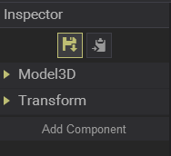
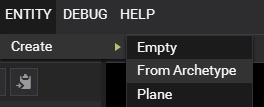

Ursine3D Documentation
0.75
Getting Started
1. What are Entities and Components
2. Creating an Entity
3. Adding a Component
4. Editor Tool Shortcuts
5. World Settings
6. Saving / Loading Archetypes
7. Saving / Loading Worlds
8. FBX Pipeline
Ursine3D Documentation
Docs
»
Getting Started
»
6. Saving / Loading Archetypes
View page source
6. Saving / Loading Archetypes
¶
Select the entity you want to save.
Click on the
Save
button in the
Inspector
.

Pick a file location, and type a name.
Load the archetype from the menu shown below:
